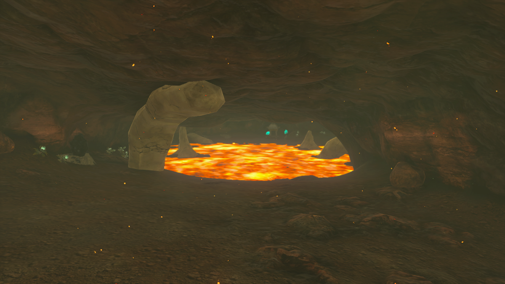

图：火之贤者阿沅——打完巨砾哥马，阿沅立下誓言。
先说结论：打面具、上火山、敲锣
鼓隆城的麻烦是吃出来的：城里到处是让人上瘾的大理石烤肉，阿沅戴上了来路不明的面具。先去阿沅队本部打碎他的面具，再坐矿车上死亡火山，打伊尔巴基亚、跳火山口进地底，敲响五口锣、击败巨砾哥马。
| 阶段 | 要做的事 |
|---|---|
| 第一段：鼓隆城 | 找布鲁多和阿沅，了解烤肉事件 |
| 第二段：阿沅队本部 | 打碎面具，阿沅恢复、加入同行 |
| 第三段：死亡火山 | 坐矿车上去，打伊尔巴基亚 |
| 第四段：火山口 | 跳进地底，向西走到火之神殿 |
| 第五段：火之神殿 | 用滚石冲击敲响五口锣 |
| 首领：巨砾哥马 | 打碎腿、爬上去打眼睛 |
接取与奖励
| 项目 | 内容 |
|---|---|
| 接取 | 监视堡垒接下四地调查后，去鼓隆城 |
| 位置 | 艾尔丁地区 · 鼓隆城 · 死亡火山 |
| 前置 | 四地调查委托 |
| 奖励 | 火之贤者阿沅加入、滚石冲击、心之容器、阿沅的誓言 |
| 后续 | 鼓隆城恢复正常；回监视堡垒继续其他三条线 |
出发前准备
| 准备 | 说明 |
|---|---|
| 防火 | 耐热料理或防火套装，至少 1 级防火全程穿着：上山路上热，地底和神殿里没防火会着火，进神殿前不要换下来 |
| 箭 | 多带 |
| 炸弹花 | 炸岩石用 |
| 料理 | 回血、加攻击，首领战用 |
第一步：鼓隆城烤肉事件
1到鼓隆城，先找布鲁多了解情况：城里人都在吃大理石烤肉，吃上瘾了，活也不干了。
2阿沅戴着面具在城北的阿沅队本部，身边还站着一个“塞尔达”。
第二步：阿沅队本部打碎面具
1进本部，阿沅和“塞尔达”在说话，对话完开打。
2阿沅会缩成球朝你冲过来：等他冲锋、撞上墙眩晕，趁他晕的时候打面具。
3多打几次，面具碎了，阿沅清醒过来，加入同行。
4他的滚石冲击能炸开岩石：本部后面被岩石堵住的洞口，用他的冲击炸开，出去。

图：本部南边的洞窟——打完面具后从这里出去。
第三步：坐矿车上死亡火山
1出洞后往北走，到死亡火山遗址西站坐矿车上死亡火山，沿途的神庙顺手点亮。
2山顶附近，伊尔巴基亚从岩浆里钻出来：三颗头。
3附近有带风扇和大电池的翼：乘翼飞近，把阿沅当炮弹射向每颗头，一头一发，三头发完它就倒。
4打完跳进火山口，落进地底。

图：死亡火山——从鼓隆城出发，坐矿车上去，山顶就是火山口。
第四步：跳火山口进地底
1落进地底先点亮附近的树根。
2一路向西走，沿途点亮树根照明，到火之神殿。
第五步：火之神殿五口锣
1神殿里有五口锣，分布在不同楼层，跟着锣声找，顺序任意。
2敲锣的办法：让阿沅用滚石冲击撞锣。
3进 Boss 房：把阿沅沿中间斜坡发射上去，他绕天花板一圈、撞落岩石，巨砾哥马掉下来开战。半血后它自己爬上天花板，在地上围出一圈爆炸岩石：用逆转乾坤把岩石送回去、或用阿沅撞开逃出，再把阿沅沿墙发射上去撞它的腿，一发就打下来。
首领战：巨砾哥马
1巨砾哥马的腿很硬：让阿沅滚石冲击撞它的腿，打碎任意两条腿它就倒地。
2倒地后眼睛露出来：爬到它背上去打，或用弓箭射（弓够强才划算）；天花板阶段也可以用蝙蝠眼珠、艾罗库达眼珠附魔箭追踪眼睛把它打下来。
3半血后它爬上天花板：把阿沅斜着滚上墙，撞它扒在墙上的腿，撞下来再打。
4打完拿心之容器，阿沅成为火之贤者，鼓隆城恢复正常。
关键信息
| 项目 | 内容 |
|---|---|
| 大理石烤肉 | 鼓隆城；吃了上瘾，事件的起因 |
| 阿沅队本部 | 城北；打碎面具，阿沅加入同行 |
| 死亡火山 | 死亡火山遗址西站坐矿车；打伊尔巴基亚 |
| 伊尔巴基亚 | 三颗头；乘翼、阿沅当炮弹，一头一发 |
| 火之神殿 | 五口锣；滚石冲击敲锣，顺序任意 |
| 巨砾哥马 | 撞腿倒地、爬上去打眼睛；半血上天花板 |
容易翻车的地方
- 没带防火就上山——山路上热，先备耐热料理或防火套。
- 阿沅冲锋时站他正前方——引他朝你冲锋、及时闪开让他撞墙眩晕，再打面具。撞三次面具就碎。
- 矿车当直达车——矿车到接近山顶处，下来再爬一小段就到山顶（轨道尽头还有座神庙）；进地底是跳火山口。
- 锣满世界找——跟着锣声走，五口都在神殿里不同楼层。
- 巨砾哥马的眼睛弓箭射不着——倒地后眼睛露出来就能射，弓够强才划算；天花板上时用眼珠附魔箭追踪打。
- 半血后它上天花板不知道怎么办——把阿沅斜着滚上墙撞腿。
一句话总结
本部打碎面具、矿车上死亡火山、打伊尔巴基亚跳火山口进地底，敲响五口锣、击败巨砾哥马——阿沅成了火之贤者，鼓隆城也清醒了。